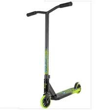
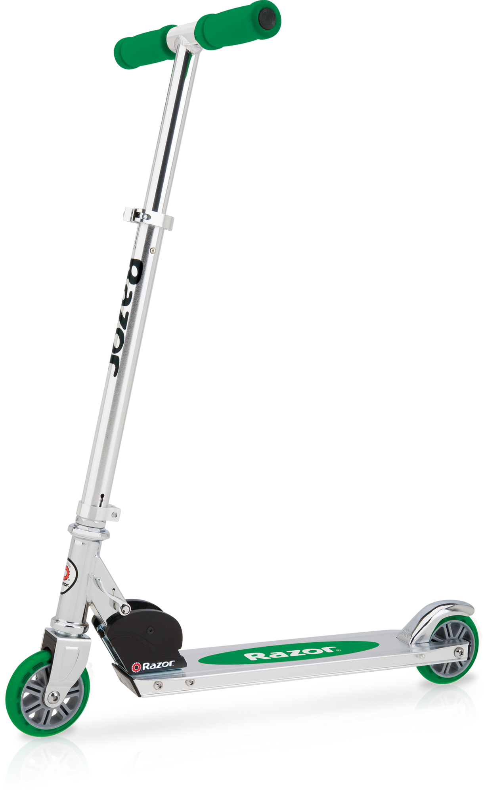

if you know how to raide and are want to do tricks then I recomend to get some sort of Madd Gear.

If you are learning how to ride I recomend a razor scooter.

A grind rail can help you learn to grind the best one to get is one no longer than 4 feet
It dosnt have to be big some sort of ramp would help with doind a tail whip becouse you got more hight to do it with, as long as it gets you more air time then it will be fine
After a month or two your weeles will get cracks dents and more, your gripes will get worn down, its aways a good idea to have an extra pair on you